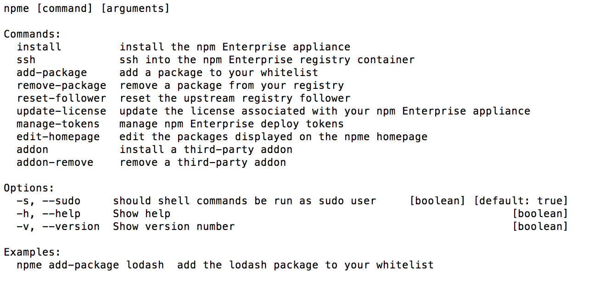

Using Microsoft Azure
Summary
To get npm Enterprise up and running on Microsoft Azure, you first need:
- An npm Enterprise license. Get a free trial here!
- A Microsoft account and an Azure account
...then we'll need to:
- Set up and deploy an Ubuntu 14.04 LTS VM
- install Node.js and npm
- install npm Enterprise itself
- Set up endpoints for the admin panel, registry, and website
Let's get started!
Step 1: Get a VM Up and Running
The first step is to get a VM running. Follow this tutorial for getting an Ubuntu 14.04 LTS VM running.
While setting this up, make sure to:
- Pick a size that has at least 7 GB of RAM. We strongly recommend 14 GB.
- Take note of the name of the Security Group you assign. We'll need to edit it in Step 3.
Feel free to make any other configurations you wish. Once you are set, deploy your VM and move on to Step 2!
Step 2: Install npm and Node.js
Now that you have a VM deployed, let's install npm and Node.js
curl -sL https://deb.nodesource.com/setup_4.x | sudo -E bash -
sudo apt-get install -y nodejs
sudo npm i -g npm@latest
node -v && npm -vStep 3: Install npm Enterprise itself
sudo npm i npme -g --unsafeTo confirm that it worked, type npme. If the install succeeded you should see the
npme help screen, which looks like this:

Step 4: Set up Endpoints
There are now 3 web services running on 3 ports on your VM. In order to access these outside of the VM, we'll need to create rules to allow them to be accessed. The ports we need to configure are:
| Service | Port |
|---|---|
| Administrator Panel | 8800 |
| Registry | 8080 |
| Website | 8081 |
Step 5: Configuring npm Enterprise
Open your favorite web browser, access your server on port 8800, and follow the prompts to configure and start your appliance.
For more information on configuring npm Enterprise, read these docs.